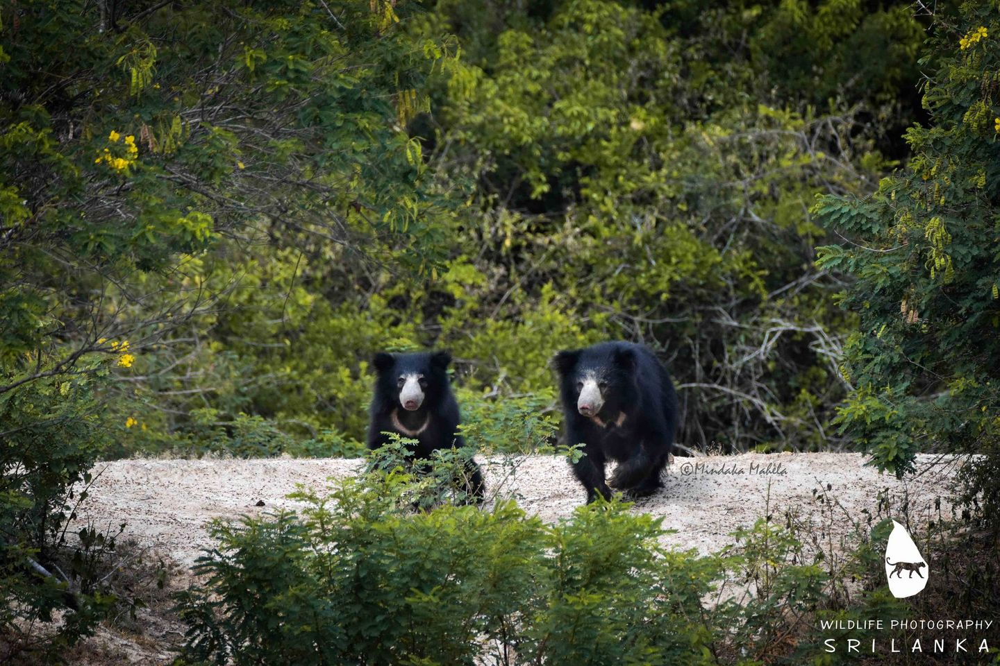
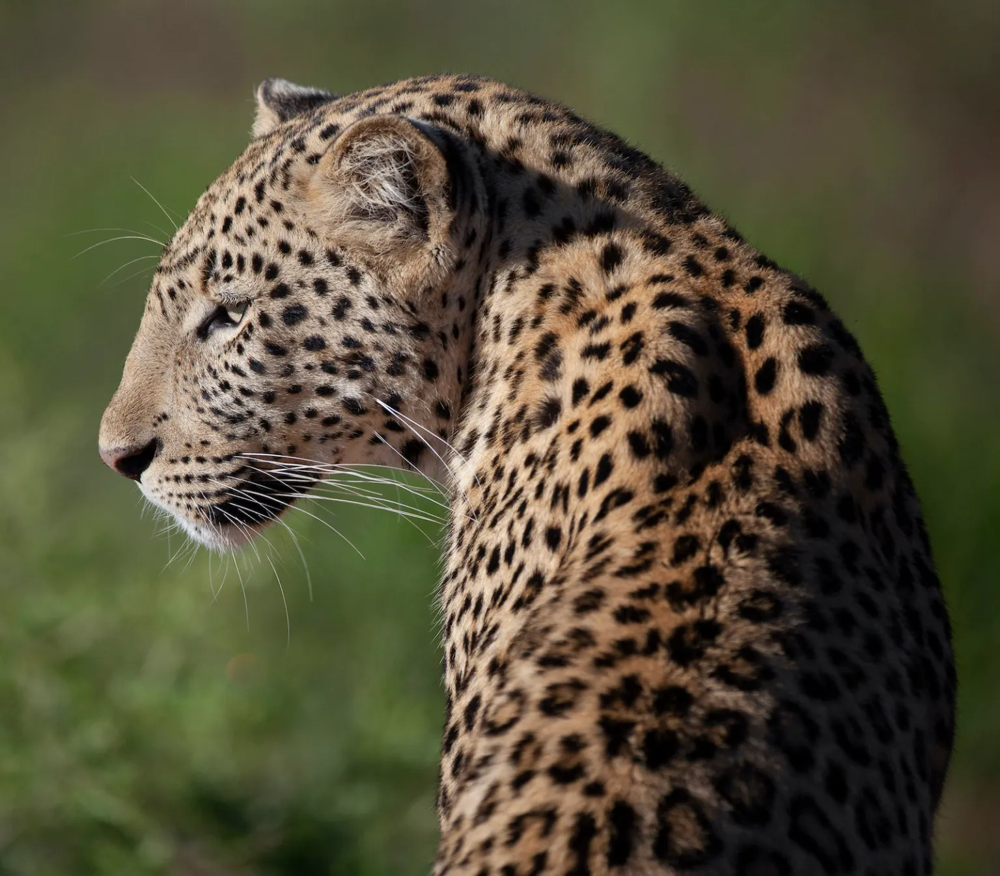

Indigenous Animals in Sri Lanka
Sri Lanka is index to a diverse range of flora and fauna, with many species found nowhere else in the world.
Here are some of the indigenous animals found in Sri Lanka:
- Sri Lankan Elephant
- Sloth Bear
- Sri Lankan Leopard
- Toque Macaque
- Sri Lankan Junglefowl
- Spotted Deer
- Water Buffalo
- Indian Muntjac
- Indian Pangolin
- Indian Hare

Sri Lankan Elephant
The Sri Lankan Elephant is the largest of the three subspecies of the Asian elephant. It is native to Sri Lanka and is considered an iconic and culturally significant species. These elephants inhabit a variety of ecosystems, from grasslands to dense forests.

Sloth Bear
The Sloth Bear, native to the Indian subcontinent including Sri Lanka, is characterized by its shaggy coat and distinct facial markings. It primarily feeds on termites and ants using its long, curved claws. Sloth bears are known for their solitary nature.

Sri Lankan Leopard
The Sri Lankan Leopard is a subspecies of the leopard native to Sri Lanka. It is the country's top predator and is known for its striking coat marked with rosettes. Adapted to various habitats, this elusive carnivore is an essential part of Sri Lanka's biodiversity.

Toque Macaque
The Toque Macaque is a primate species endemic to Sri Lanka. Recognizable by its unique toque-like hair on its head, this monkey species lives in various habitats, from lowland rainforests to urban areas. They are highly social and often form large groups.

Sri Lankan Junglefowl
The Sri Lankan Junglefowl is the national bird of Sri Lanka and is endemic to the island. Males are notable for their colorful plumage and are considered the ancestors of the domestic chicken. They inhabit forested areas and are known for their distinctive calls.

Spotted Deer
The Sri Lankan Junglefowl is the national bird of Sri Lanka and is endemic to the island. Males are notable for their colorful plumage and are considered the ancestors of the domestic chicken. They inhabit forested areas and are known for their distinctive calls.

Water Buffalo
The Sri Lankan Junglefowl is the national bird of Sri Lanka and is endemic to the island. Males are notable for their colorful plumage and are considered the ancestors of the domestic chicken. They inhabit forested areas and are known for their distinctive calls.

Indian Muntjac
The Indian Muntjac, also known as the barking deer, is a small deer species found in Sri Lanka. It is known for its distinctive barking sound. These deer are adaptable and can thrive in various habitats, including forests and grasslands.

Indian Pangolin
The Indian Pangolin, native to Sri Lanka, is a scaly anteater. It has protective overlapping scales made of keratin. Pangolins are primarily nocturnal and feed on ants and termites using their long, sticky tongue.

Indian Hare
The Indian Hare, found in Sri Lanka, is a small mammal known for its swift movements. As herbivores, they play a role in the ecosystem's balance. They are prey to various predators and contribute to the food web.
For more information about these animals, please visit the World Atlas website.